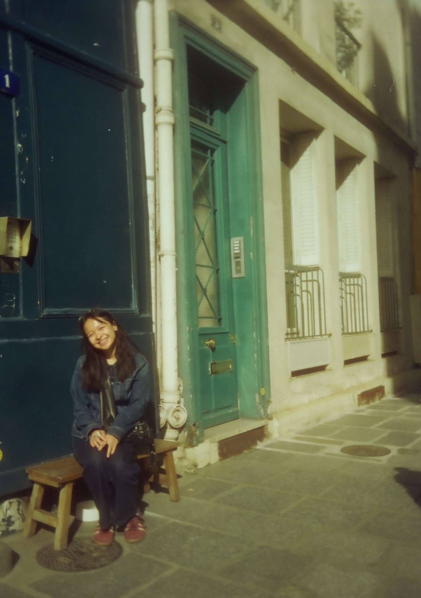

I am an undergraduate astrophysics researcher at the University of Chicago. I focus primarily on stellar and galactic archaeology, tracing the history of our local universe by studying very old objects such as dwarf galaxies, stellar streams, and very metal-poor stars. Alongside my work in science, I think a lot about critical theory from an arts and humanities perspective.